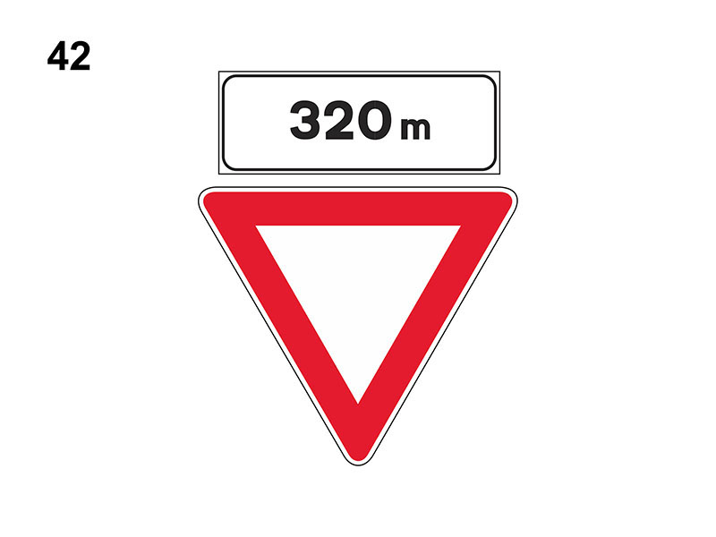

Preavviso di dare la precedenza a destra ed a sinistra

E' un segnale di prescrizione (precedenza).
Preannuncia la successiva presenza di un segnale di 'DARE PRECEDENZA' e indica la distanza dall'incrocio in cui dovremo dare la precedenza.
Indica di rallentare per potersi fermare se ci sono veicoli cui bisogna dare precedenza.
E' posto su strade extraurbane che non hanno diritto di precedenza.
Preannuncia la successiva presenza di un segnale di 'DARE PRECEDENZA' e indica la distanza dall'incrocio in cui dovremo dare la precedenza.
Indica di rallentare per potersi fermare se ci sono veicoli cui bisogna dare precedenza.
E' posto su strade extraurbane che non hanno diritto di precedenza.